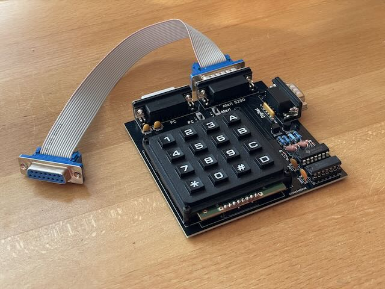

Mit diesem Adapter kann man einen analogen PC Game Port Joystick, einen Atari kompatiblen Joystick oder einen Sega Megadrive Controller am Atari 5200 verwenden. Auf dem Adapter selbst sind die zusätzlichen Tasten des 5200. Dafür kann entweder ein Ziffernblock oder einzelne Taster verwendet werden.
Schaltung und Platine sind von mir, inspiriert von diversen Schaltungen aus dem Internet. Ich habe es aufgebaut und getestet.

| Komponente | Anzahl | Preis | Anbieter |
| Platine | 1 | €1.00 | |
| 100nF Kondensator | 2 | €0.06 | Reichelt • Reichelt |
| 220nF Kondensator | 2 | €0.16 | Reichelt • Mouser |
| 1kΩ Widerstand | 2 | €0.08 | Reichelt |
| 10kΩ Widerstand | 2 | €0.08 | Reichelt |
| 250kΩ Widerstand | 2 | €0.70 | Mouser |
| 500kΩ Widerstand | 2 | €0.12 | Mouser |
| 5-4 4.7kΩ Widerstandnetzwerk | 1 | €0.08 | Reichelt |
| 1N4148 Diode | 2 | €0.04 | Reichelt |
| 2N3906 Transistor | 2 | €0.10 | Reichelt |
| 4066 | 1 | €0.36 | Reichelt |
| 4069 | 1 | €0.68 | Reichelt |
| 2xEin/Ein Schalter | 2 | €9.38 | Reichelt |
| 4x4 Ziffernblock | 1 | €8.26 | eBay |
| 1x4 Stiftleiste | 1 | €0.07 | Reichelt |
| 90° D-Sub-9 Stecker | 1 | €0.36 | Reichelt |
| 90° D-Sub-15 Buchse | 2 | €0.96 | Reichelt |
| M3 Schraube | 8 | €0.08 | Reichelt |
| M3 6mm Abstandhalter Buchse/Buchse | 8 | €0.08 | Reichelt |
| nur Platine | €1.00 | ||
| Bausatz | €22.65 |
| Komponente | Anzahl | Preis | Anbieter |
| Platine | 1 | €1.00 | |
| 100nF Kondensator | 2 | €0.06 | Reichelt • Reichelt |
| 220nF Kondensator | 2 | €0.16 | Reichelt • Mouser |
| 1kΩ Widerstand | 2 | €0.08 | Reichelt |
| 10kΩ Widerstand | 2 | €0.08 | Reichelt |
| 250kΩ Widerstand | 2 | €0.70 | Mouser |
| 500kΩ Widerstand | 2 | €0.12 | Mouser |
| 5-4 4.7kΩ Widerstandnetzwerk | 1 | €0.08 | Reichelt |
| 1N4148 Diode | 2 | €0.04 | Reichelt |
| 2N3906 Transistor | 2 | €0.10 | Reichelt |
| 4066 | 1 | €0.36 | Reichelt |
| 4069 | 1 | €0.68 | Reichelt |
| 2xEin/Ein Schalter | 2 | €9.38 | Reichelt |
| 6x6x8mm Taster | 16 | €3.20 | Reichelt |
| 1x4 Stiftleiste | 1 | €0.07 | Reichelt |
| 90° D-Sub-9 Stecker | 1 | €0.36 | Reichelt |
| 90° D-Sub-15 Buchse | 2 | €0.96 | Reichelt |
| nur Platine | €1.00 | ||
| Bausatz | €17.43 |
| Komponente | Anzahl | Preis | Anbieter |
| D-Sub-15 Buchse für Flachbandkabel | 1 | €0.75 | Reichelt |
| D-Sub-15 Stecker für Flachbandkabel | 1 | €0.74 | Reichelt |
| 15 poliges Flachbandkabel, 1m | 0.2 | €0.17 | Reichelt |
| Bausatz | €1.66 |